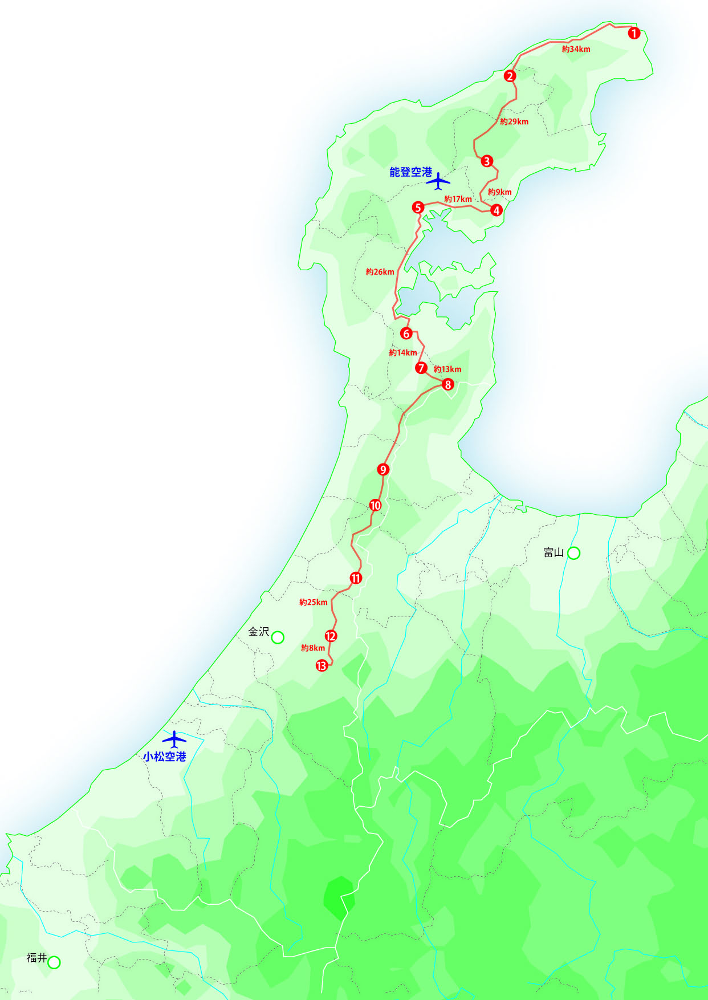

北陸修験古道マップ
より大きな地図で 北陸修験古道 を表示
より大きな地図で 北陸修験古道 を表示 
須須神社
日本海側一体の守護神とされ、第10代祟神天皇の時代に創建された由緒ある神社。祭神は、寺家高座宮の主神高倉彦神と山伏山山頂の奥宮に祀られている美穂須須美命。須須神社の宝物殿には、国指定重要文化財の木造男神像や、数々の古文書、義経ゆかりの品々が収蔵されている。
岩倉寺
約1300年の歴史を誇る真言宗の名刹。築500年の本堂を持ち、本尊の千手観音は猟師が日本海より発見し岩倉山に安置した秘仏。輪島市指定文化財の五重の塔や密教宝具、古文書、黒漆塗陰刻棟札など多くの文化財も拝観できる。
大峯神社
山門の中に六地蔵を置き、上層に梵鐘を吊し、大きな庫裏の前には本堂が立つ奥深い堂内で、須彌壇は伺う事は出来ないが床を高く造り多くの人を集める。大杉を中にして氏神と系内を一つにする。氏神の社叢は天然記念物に指定されている。
明泉寺
白雉3年（西暦652年）に創始された、穴水町字明千寺にある真言宗の古刹。境内の石塔五重塔は、国指定重要文化財。また、境内には、弘法大師がこの地で修行したときに、空から降ってきて夜を照らしたといわれる明星石がある。
来迎寺
弘仁5年（814）、嵯峨天皇の勅願により建立された真言宗の古刹。樹齢600年を越えるライコウジキクザクラや、700年前に造られたという庭園の美しさは見事。庭園は県の名勝に指定されている。
赤蔵寺
天平2年（730）、聖武天皇の皇太子が眼病を患った際、大和多武峯の法師を赤蔵山に遣わし、祈願したところ、眼病が癒えたため諸堂を建立し五里の地を社領としたと言われている。かつての神仏習合寺の姿を色濃く残しており、33年ごとの赤蔵山大開帳行事にみられるごとく、今もその信仰が強く地域に息づき、地元民により大切に護持されてきた霊山である。
長楽寺
泰澄が能登を巡錫した時、霊地として一宇を建立し安楽寺と号した。その後、能登畠山氏の祈願所となり七堂伽藍三十三坊を置いて栄える。しかし上杉謙信の戦に巻き込まれ、七堂伽藍を誇る大寺は灰燼となるが、明治の廃仏毀釈のおり、北陸 石動山の佛像等寺寶を受け継ぎ今に至る。
伊須流岐比古神社
かつて石動山は、白山と並ぶ北陸地方を中心として広い地域からの尊敬を集める一大霊山であった。創建は祟神天皇6年（紀元前92）、法道上人が宝剣を収め、大比古神が社殿を建立したのが始まりと伝えられている。加賀、能登、越中の山岳信仰の拠点霊場として栄え、最盛期の中世には北陸七カ国に勧進地をもち、院坊360余り、衆徒役3,000人の規模を誇ったと伝えられる。明治5年（1872年）、神仏分離令が公布。その際、凄まじい廃仏毀釈が行われ、石動山全山に渡って伽藍・院坊が破壊され、寺としての痕跡は徹底的に破却された。その後、わずかに残された大宮を御輿堂の場所に移設して、それぞれ本殿・拝殿とした。
御山神社
その昔、加越能三州の鎮護の神として三国峠に御社殿があったが、天正年間の戦乱で焼失、奥村氷福が社殿再建、その後、座主という人が、今の尾山の地に移し祀ったといわれている。宝歴4年（1754）村社改定の折、それぞれの村でお宮を建て、村の守り神を勧請。明治40年6社が合併して、村社、御山神社と改称され、平成4年9月6日に新しい社殿に改築された。
倶利伽羅不動寺
養老2年(718)、善無畏三蔵法師（インドの高僧）がこの地を霊地と悟り、倶利伽羅不動尊を掘り込み安置したのが始まりと伝えられている。倶利伽羅不動尊は古くから成田不動尊（千葉県）、大山不動尊（神奈川県）と並び日本三不動尊に数えられ全国の中でも不動霊場として名が知られている。
本泉寺
嘉吉2年（1442）本願寺6世巧如の第3子で越中井波瑞泉寺2世である如乗が二俣の地に開創し、瑞泉寺、本泉寺を兼任した蓮如は文明年間（1469～87）に再び本寺に滞在し、本堂背後の九山八海の庭（県指定名勝）を作庭したと伝えられている。
医王寺
戸室山の山麓にあり、400段以上の楷段がある。戸室大権現と飛櫓（とむろ）大権現が祀られている。飛櫓は戸室の語源であるという。飛櫓とは、「とぶろ」で、沖行く船から櫓が飛んでくる霊術を持っていたということから名づけられたという。祭神は戸室権現で、修験道との関わりを示している。